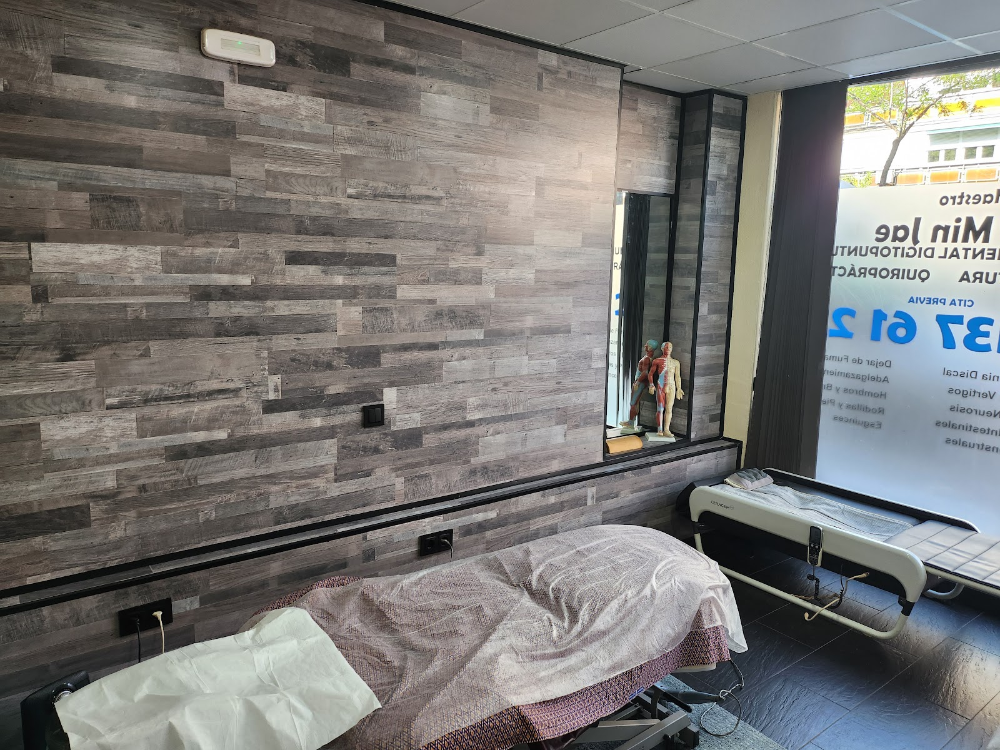
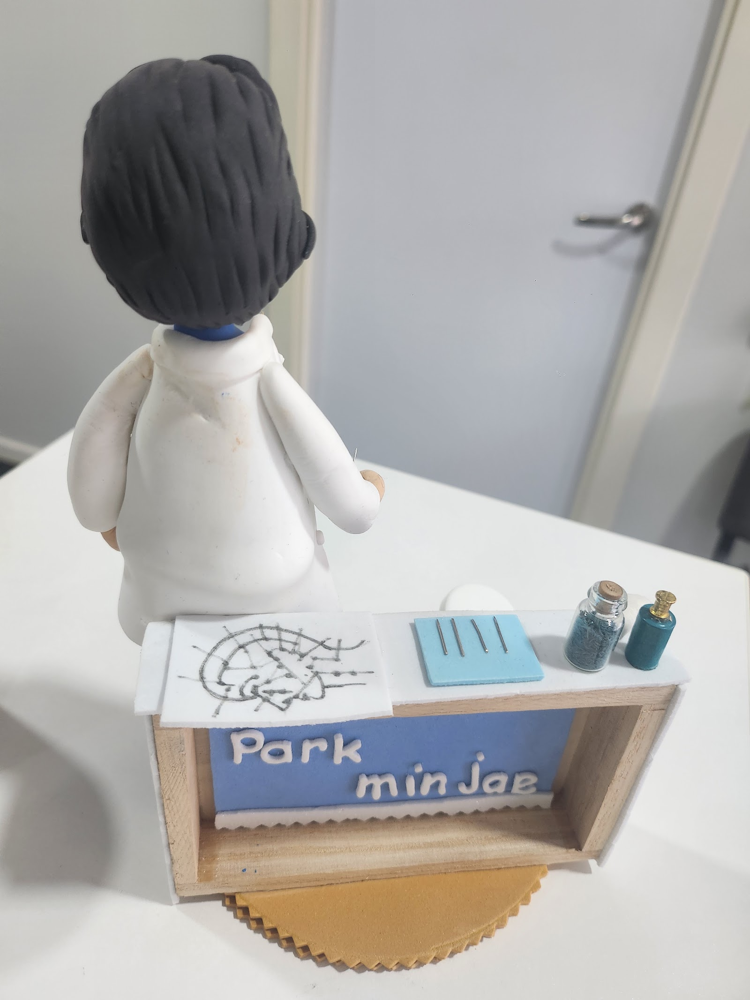

Acupuntura, digitopuntura y quiropráctica en la calle Luis Pando, en el barrio de Lucero. Un equipo amable y atento, pendiente en todo momento de que estés bien.
★★★★★4,9 · 184 reseñas en Google
El maestro Park Min Jae y su equipo valoran contigo lo que te molesta y te acompañan sesión a sesión, con música suave y un ambiente pensado para que te relajes.
Técnica coreana.
Amable y cercano.
Formación acreditada.
184 reseñas.
Todo organizado por grupos, para que encuentres lo que buscas en segundos.
Te esperamos en la calle de Luis Pando, 5, en Lucero (Latina).

4,9 de 5 estrellas · 184 reseñas
"Ya hace más de un año que voy cada dos semanas. Para mí es una felicidad cada vez que llega la hora de la sesión, porque es mi momento de relajación y mimo. La atención de Min y Kim es excelente; la música ayuda a relajarse y el centro es muy limpio y agradable."
Brenda F."Fui para una terapia de dolor en mi brazo derecho. Park y Kim fueron muy amables y muy profesionales: no solo revisaron mi brazo, sino también mi espalda y cadera."
Norelkys R."Excepcional, Miguel y Joukin súper atentos. Trabajan muy bien. Recomendado 100 %."
María Carmen M.Atendemos con cita previa. Escríbenos por WhatsApp.
C. de Luis Pando, 5, Bajo
28047 Latina, Madrid